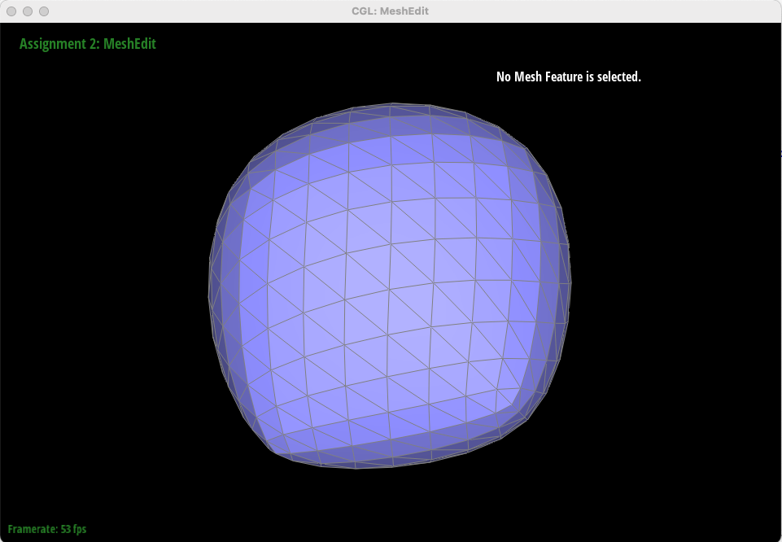

Overview
In this project, we learned about the different techniques to display surfaces with a smooth and realistic appearance. In Section I: task 1 and 2, we concentrated on using de Casteljau’s algorithm to create smooth Bezier curves and surfaces based on a given set of control points. In particular, the algorithm provided a recursive approach that interpolated together control points to find the surface points required to evaluate a smooth Bezier surface. However, in Section II, we transitioned into using triangle meshes to display smooth surfaces, because Bezier surfaces are much more difficult to render. After looking online, we discovered that this is because it is difficult to ray trace without using techniques like loop subdivision that utilize triangle meshes. One advantage of using triangle meshes was seen in task 3, where we utilized area-weighted vertex normals to achieve smoother shading - compared to the original flat shading. This technique was obviously very effective in our comparison of how the teapots were shaded in Figure 3.1 and 3.2 respectively. Next, in task 4 and 5, we implemented the steps required for half-edge flips and splits. The importance of these tools was evident in task 6, where we implemented loop subdivision for mesh upsampling. This essentially allowed us to convert very basic polygons into higher-resolution ones with smoother and more realistic displays by adding new vertices to the triangle mesh. Altogether, the tools we built throughout this project allowed us to render smooth and realistic 1D, 2D, and 3D polygons using techniques such as de Casteljau’s algorithm and triangle meshes.
Section I: Bezier Curves and Surfaces
Part 1: Bezier curves with 1D de Casteljau subdivision
De Casteljau's algorithm works by inserting points on edges between points using linear interpolation. The location of the inserted points depend on a given parameter, t. Consecutive newly inserted points are then connected, thus creating "new edges". These steps are recursively applied, until we eventually arrive at one final, single point. This point lies on the final Bezier curve that connects the first and last control points.
In order to implement De Casteljau's algorithm to evaluate Bezier curves, we simply used a for loop that iterates through the 2D vector points provided and lerps together consecutive points to create the "newly inserted points". The lerped points are then added to a 2D vector that is used for the next recursive iteration. Using this strategy, a single, final point will eventually be found and returned in a 1-element 2D vector. This point is on the Bezier curve, which in combination with the first and last original control points, makes up the Bezier curve for the given set of control points.
|
|
|
|
|
|
|
|
|
Part 2: Bezier surfaces with separable 1D de Casteljau subdivision
De Casteljau’s algorithm extends to Bezier surfaces because we are essentially applying the same algorithm twice - to multiple sets of control points. In an n x n grid, each n x 1 set of control points (in the u dimension) are interpolated together to eventually form their own Bezier curve: in total we have n Bezier curves in the u dimension. On each of those n curves, the given u value is associated with a new control point, that when put together, creates a new set of control points (in the v dimension) that can be used to create a Bezier curve for that value of u. Using the same 1D de Casteljau’s algorithm we used before, we can evaluate for a single, final point (known as the surface point) at position v on this “moving” Bezier curve, thus allowing us to combine the u and v dimensions to evaluate a Bezier surface.
In our implementation, we followed the procedure outlined above, by using the 1D de Casteljau’s algorithm on the u dimension of the controlPoints member variable, followed by using it again on the set of control points defined by variable u on the Bezier curves in the u dimension. By calling evaluate1D() on each set of control points in the u dimension, we compose a vector of length n (on an n x n grid) that can be passed into evaluate1D() again to find the surface point in dimension v.
Section II: Sampling
Part 3: Average normals for half-edge meshes
In order to calculate the area-weighted vertex normals, we first select the specific vertex. We then iterated through all the different faces incident to the vertex. This was done by retrieving the specific halfedge of the vertex, and getting the normal of the face belonging to that halfedge. We then looped through the rest of the faces by getting the next half edge of the twin half edge of the current halfedge, and added up the face normals in a vector. It should be noted that the magnitude of the normal is equivalent to 2 times the area of the face as the magnitude of the cross product of two vectors will yield the area of the parallelogram of those two vectors. Since we divided the sum vector by its norm, whether we divide each normal by 2 doesn’t really matter as the 2 would be shown in the norm as well. Lastly, we returned this vector divided by its norm.
In the screenshots attached, it can be seen that with the vertex-normals we get smooth shading between different triangles and the teapot looks like one entity. Without the vertex-normals, the shading is not smooth at all between the different triangles that make the teapot mesh and the teapot looks exactly like a mesh put together to look like a teapot.
|
|
|
Part 4: Half-edge flip
To implement the half-edge flip procedure, we used the following steps:
- We assigned all elements, including half-edges, edges, vertices, and faces to temporary variables that are used to keep track of each element.
- Next, we reassigned all elements’ half edges to the correct elements in the post-edge-flip mesh. This includes the e0 edgeIter that was passed into the flipEdge() function in the beginning. To avoid confusion, this process included half edges whose associated elements were not being changed as well.
- Next, we assigned all half edges’ twins to temporary variables, which is helpful when we reference them when we call setNeighbors() on all 6 half edges.
- Finally, we set the next, twin, vertex, edge, and face elements for each of the six half edges using the provided setNeighbors() function. After doing so, the half-edge flip is complete and we simply return edgeIter e0.
The most helpful debugging tricks that were applicable for this task was simply writing down on a piece of paper exactly what elements are changing and which are staying the same during the edge flip process. From there, it was pretty straightforward just reassigning the pointers.
|
|
|
Part 5: Half-edge split
To implement the half-edge split procedure, we used the following steps:
- Create new features for the two new triangles that are being created.
- Assign all elements, including half-edges, edges, vertices and faces to temporary variables to be used later on.
- Calculate and set the position of vertex m by finding the average of vertex c’s and vertex b’s position. Vertex C and vertex B were assigned in the previous step.
- Set the correct half-edges for all vertices, edges, and faces (regardless of whether they are getting assigned new ones). The original edge that was passed into the function - e0 - is re-configured to be the upper half of the vertical edge in the edge split.
- Assign all half edges’ twins to temporary variables.
- Call setNeighbors on all new and old halfedges, using the twin temporary variables from the previous step.
Task 5 was more difficult to debug than Task 4 at times, because of how many different elements were being created. Again, illustrating everything down on a piece of paper was useful. In this procedure in particular, it was helpful to reassign the original vertical edge to be half of the new vertical edge in the edge split. In doing so, less elements had to be created and old elements could be reused, thus saving memory space.
|
|
|
Fig 5.3 - the diamond in the center is created after splitting edges followed by flipping the inner newly created edges.
Part 6: Loop subdivision for mesh upsampling
In order to implement the loop subdivision, we first iterated through all vertices in the mesh by starting at mesh.verticesBegin() and going until mesh.verticesEnd(). For each vertex, we calculated the vertex degree, the constant u, and the new position of the vertex using this equation: (1.0 - n * u) * v->position + (neighbourSum * u). In this case, neighboursSum is the sum of the positions of the neighboring vertices which we looped through by retrieving the next halfedge of the twin halfedge of the current halfedge where the current halfedge initially is set to the given vertex’s halfedge. The new position is then stored in vertex->newPosition. We then computed the positions of the new vertices that would be added when splitting an edge. This was done by iterating through the edges, getting the designated vertices around the edge and calculating the new position using this equation: (3.0/8.0) * (a->position + b->position) + (1.0 / 8.0) * (c->position + d->position) where a and b are the vertices connecting the edge and c and d are the vertices shared by a and b. Again, the new positions were stored in edge->newPosition. Then we went about iterating through all the original edges and splitting them. The new vertex that was obtained had its newPosition set to the newPosition of the given edge. We also set the isNew flags of the new and old edges derived from the split and the new vertex correspondingly. We then iterated through all the new edges and flipped the edges that were new and connected a new and an old vertex. Lastly, we iterated through all the vertices and set their positions according to their newPosition attribute.
One cool implementation trick we used was to keep a counter when iterating through the edges at the very beginning. This allowed us to get the total number of original edges and iterate only through them when splitting/creating edges. One thing that was very annoying were floating point errors. We came to the realization that if we used double, or even int for n which is an int but gets multiplied by a float, we got some errors. We got around this by storing our numbers as floats and with decimals.
|  |
Note that when we loop subdivide a cube, the sharp corners and edges get smoothed out. However, this causes the shape to lose some of its volume in an asymmetrical manner. To fix this, we can try and pre-split triangle edges on each face of the original cube. This is what happened:

|
The reason why edge-splitting triangle faces on the original cube helps to keep the shape symmetrical throughout repeated subdivisions is because in doing so, we are making the starting shape more symmetrical. In the original cube in Figure 6.1, we notice that the edges are not oriented equally on each face. While one edge may start from the top left and end on the bottom right of the cube’s face, another edge will start from the bottom left and end on the top right. Hence, when we loop divide each shape, we are losing volume on the edges/faces in an asymmetrical manner. To combat this, we split all the edges on all six faces of the cube. As shown in Figure 6.2, after performing loop subdivisions, each face changes volume exactly like the others as the edges on those faces are oriented the same way. This allows the cube to be symmetrical rather than asymmetric.
Section III: Optional Extra Credit
If you are not participating in the optional mesh competition, don't worry about this section!